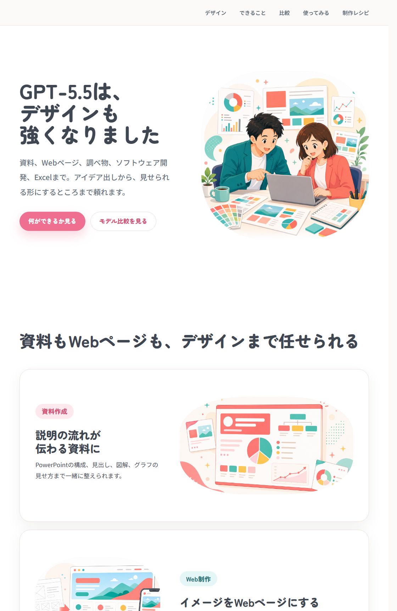
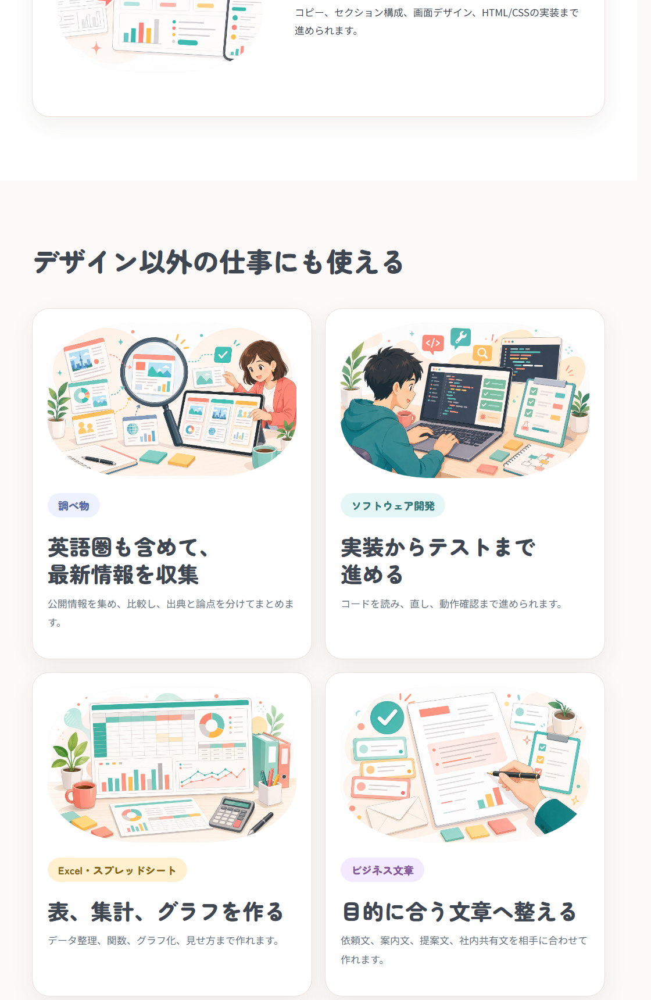
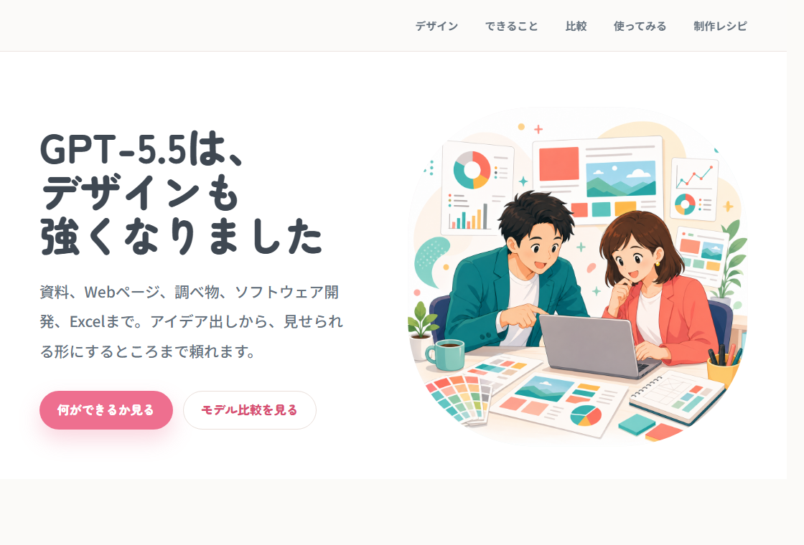

デザインデモLP
GPT-5.5でできることを、資料作成、Web制作、調べ物、ソフトウェア開発などに分けて見せるページです。
Codexで、LPの構成、コピー、イラスト、HTML/CSS、公開前チェックまで整えた流れです。今回のデザインを他の題材でも使えるよう、手順とデザインガイドを分けてまとめました。


LP本体、制作レシピ、再利用できるデザインガイドを、社内で共有しやすいURL付きの形にしました。
GPT-5.5でできることを、資料作成、Web制作、調べ物、ソフトウェア開発などに分けて見せるページです。
どんな順番で依頼し、どの観点で直し、公開前に何を確認したかを読めるページです。
デモLPとレシピを、同じGitHub Pages上で開けるようにまとめました。
最初から固定案を作り込まず、画面を見ながら、言葉、画像、余白、公開リスクを順番に詰めました。
「GPT-5.5はデザインも強くなりました」を主メッセージにし、社内で使ってみたくなるLPにすると決めました。

明るい白背景、ピンク、丸い見出し、親しみやすい日本語を基準にし、硬すぎるSaaS風から離しました。

見出し、導入文、ボタン、メインビジュアルを組み、最初に伝えることを一つに絞りました。

資料作成、Web制作、調べ物、ソフトウェア開発、Excel、ビジネス文章に分け、読み手が用途を想像しやすくしました。

人物ばかり、同じ構図、小物の詰め込みを避け、各セクションの主役が一目で分かる絵に寄せました。

重複した説明、意味の薄い英語、見出しの句点を削り、見出しだけでも内容が伝わるようにしました。

開発、数学、専門業務、文書業務の4軸で、他社AIとの比較を直感的に見られるグラフにしました。

WebからGPT-5.5を使う導線と、CodexアプリでGPT-5.5を使う導線を分け、迷いにくくしました。

公開用ファイルだけを分離し、秘密情報、ローカルパス、未使用ファイル、外部読み込み先を確認しました。
会社GitHubの公開リポジトリへアップロードし、URLで表示、HTTPS、更新反映を確認しました。
回数や内訳は、必要になった場合に戻せるよう非表示で残しています。
最初から長い仕様書にせず、目的、初版、レビュー、公開前チェックの順に渡すと進めやすくなります。
目的は、社内向けに[テーマ]を伝えるLPを作ることです。
ターゲットは[読み手]です。
まず構成案を出し、その後HTML/CSSで静的ページを作ってください。見出し、余白、画像、色、文字組みを客観的にレビューしてください。
冗長な説明は削り、見た人がすぐ理解できる構成に直してください。公開用ファイルだけを分離してください。
秘密情報、ローカルパス、未使用ファイル、画像メタデータ、外部読み込み先を確認してください。具体的な題材は入れず、見た目と進め方だけを渡せる形にしています。作りたい内容と一緒にAIへ渡してください。
---
version: alpha
name: Warm Friendly Japanese Demo Tone
description: 明るく親しみやすい日本語向けLPや資料に使う、再利用可能なデザイントーン。
tokens:
color:
accentPink: "#EE6F8F"
accentPinkDeep: "#D84F73"
accentPinkPale: "#FDE8EE"
accentMint: "#65C4C5"
accentMintPale: "#E5F6F6"
accentYellow: "#F6C769"
cream: "#FFF8EF"
ink: "#3F4852"
mutedText: "#66727E"
line: "#EADFDA"
background: "#FBFAF8"
surface: "#FFFFFF"
typography:
display:
fontFamily: "Zen Maru Gothic"
weight: 900
lineHeight: 1.08
letterSpacing: 0
body:
fontFamily: "Noto Sans JP"
weight: 500
lineHeight: 1.85
letterSpacing: 0
shape:
superellipse:
description: "角丸長方形ではなく、四隅がなめらかに丸く膨らむスーパー楕円を使う。"
cardRadius: "26px"
pillRadius: "999px"
---
# Warm Friendly Japanese Demo Tone
## Visual Direction
- 白背景を基本に、ピンク、ミント、やわらかい黄色、チャコールを組み合わせる。
- かわいさは丸み、余白、親しみやすいイラストで出す。
- ダークテーマ、硬いSaaS風、意味の薄い英語ラベルは避ける。
## Typography
- 見出しは Zen Maru Gothic。太く、丸く、読みやすく。
- 本文は Noto Sans JP。小さくしすぎず、投影でも読めるサイズにする。
- 見出しに句点は付けない。読点は意味の区切りとして必要な場合だけ使う。
- 日本語見出しが1文字だけ改行されないよう、意味単位で改行を制御する。
## Layout
- 1セクション1メッセージ。見出しで伝わるなら本文は短くする。
- 本文は見出しの繰り返しにせず、具体例や補足だけを書く。
- 画像と文章は交互に配置し、すべて同じ構図にしない。
## Illustration
- 丸みのある商業イラストにする。
- 特定作品、特定キャラクター、既存IPの絵柄やロゴはコピーしない。
- 画像内の文字は入れない。情報はHTML側のテキストで伝える。
- 1枚の中に小物を詰め込みすぎず、主役のオブジェクトを大きく見せる。
## Copywriting
- 「すごい」ではなく、読み手の仕事がどう楽になるかを書く。
- 同じ内容をラベル、見出し、本文で繰り返さない。
- 専門用語は、必要な場合だけ短く説明する。公開用フォルダだけに、HTML、CSS、使用画像、必要な設定ファイルだけを入れる。
APIキー、トークン、ローカルパス、社内メモ、未公開情報、不要なユーザー名がないか検索する。
未使用画像を含めず、必要なら再保存してメタデータを落とす。画像内の文字崩れも確認する。
PCとスマホ幅でスクリーンショットを取り、文字組み、余白、画像の見切れを確認する。